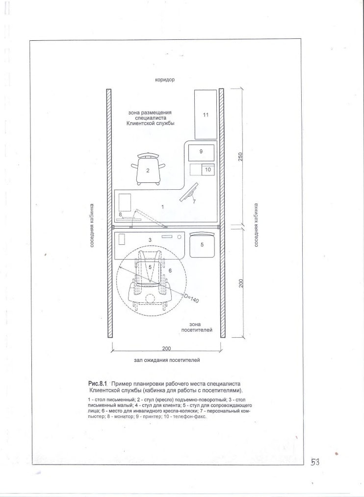
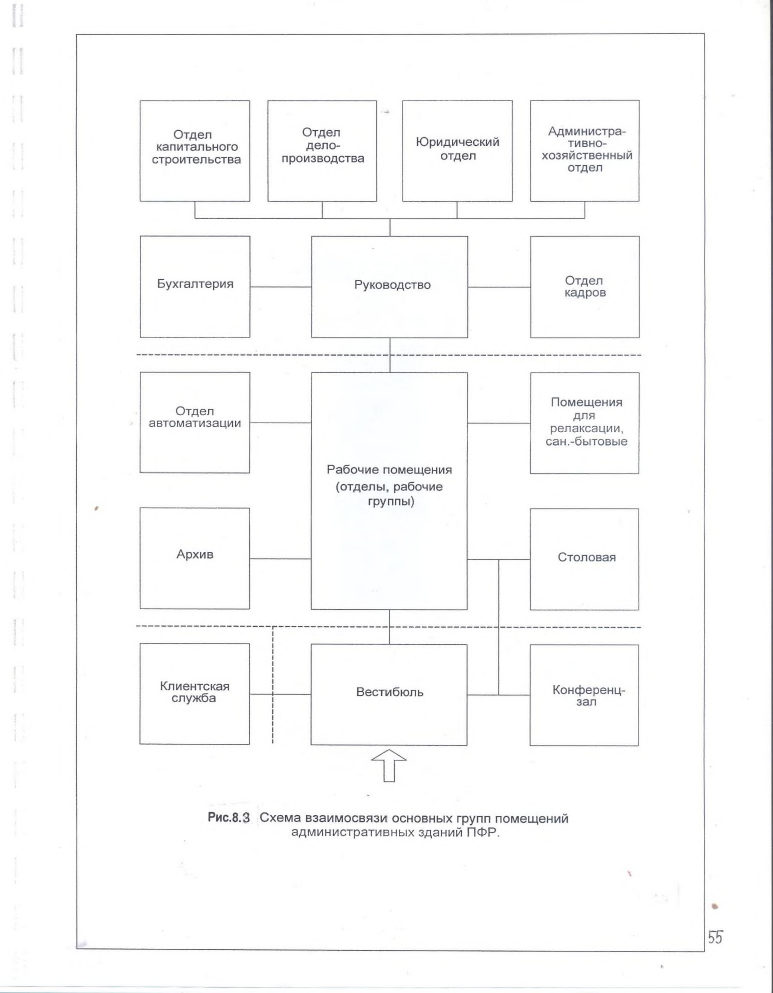

СП 242.1325800.2015 «Здания территориальных органов Пенсионного фонда Российской»
О документе: разработчики, утверждение, регистрация, ключевые слова
СП 242.
1325800.2015
СВОД ПРАВИЛ
СП 242.1325800.2015
Издание официальное
1 ИСПОЛНИТЕЛИ Общество с ограниченной ответственностью «СтройСервис» (ООО «СтройСервис»), Общество с ограниченной ответственностью «Научноисследовательский и проектный институт учебных, общественных и жилых зданий» (ООО «Институт общественных зданий»).
2 ВНЕСЕН Техническим комитетом по стандартизации ТК 465 «Строительство», Федеральным автономным учреждением «Федеральный центр нормирования, стандартизации и технической оценки соответствия в строительстве» (ФАУ «ФЦС)
3 ПОДГОТОВЛЕН Департаментом градостроительной деятельности и архитектуры Министерства строительства и жилищно-коммунального хозяйства Российской Федерации (Минстрой России)
4 УТВЕРЖДЕН Приказом Министерства строительства и жилищнокоммунального хозяйства Российской Федерации от 18 ноября 2015 г. № 827/пр и введен в действие с 26 ноября 2015 г.
5 ЗАРЕГИСТРИРОВАН Федеральным агентством по техническому регулированию и метрологии (Росстандарт)
Информация об изменениях к настоящему своду правил , а также тексты изменений и поправок размещаются в информационной системе общего пользования - на официальном сайте Министерства по строительству и жилищно-коммунальному хозяйству Российской Федерации в сети Интернет
© Минстрой России, 2015
Настоящий нормативный документ не может быть полностью или частично воспроизведен, тиражирован и рассмотрен в качестве официального издания на территории Российской Федерации без разрешения Минстроя России.
Введение
СП 242.
1325800.2015
Настоящий свод правил разработан с учетом перспектив развития деятельности Пенсионного фонда Российской Федерации (ПФР) и направлен на повышение уровня комфорта, доступности и безопасности пенсионного обеспечения граждан, полное соответствие проектируемых и капитально ремонтируемых зданий ПФР их функциональному назначению, на повышение экономичности разрабатываемых проектов.
Разработка свода правил выполнена авторским коллективом:
ООО «Институт общественных зданий» (руководитель работы - канд. арх. Д.А.Рождественский , ответственные исполнители -ст. науч. сотрудник Л.В.Сигачева , канд. техн. наук А.И.Цыганов , канд. арх. Т.А.Исаева , канд.арх. А.В.Анисимов , канд. техн. наук Б.В.Жадановский) ; ООО «СтройСервис» (Генеральный директор Ю. В. Игнащенко , зам. ген. дир., канд. физ.-мат. наук, доцент Е.Ю.Игнащенко) ; Пенсионный фонд Российской Федерации (Начальник департамента С.Л.Рыжков, зам.начальника департамента Ю.В.Гулида, зам.начальника департамента И.А.Кондратенко ).
Дата введения 2014-11-26
УДК :006.354 ОКС 91.040.10
Ключевые слова: свод правил, здания и сооружения административные, основные функциональные группы помещений, удельные расчётные показатели, помещения обслуживания пенсионеров и застрахованных лиц, обеспечение надежности и безопасности, энергосбережение, обеспечение санитарно-эпидемиологических требований, предельные значения нормативов площади
ИСПОЛНИТЕЛИ
| Руководитель организации - разработчика ООО «Институт общественных зданий» Генеральный директор | Д.А.Рождественский |
|---|---|
| Руководитель разработки | |
| Генеральный директор | Д.А.Рождественский |
| Исполнители | |
| Старший научный сотрудник | Л.В.Сигачева |
| Старший научный сотрудник | А.И.Цыганов |
| Старший научный сотрудник | А.В.Анисимов |
| Ведущий научный сотрудник | Б.В.Жадановский |
| СОИСПОЛНИТЕЛИ | |
| Генеральный директор | Ю.В.Игнащенко |
| Исполнитель | |
| Зам.генерального директора | Е.Ю.Игнащенко |
Введение
6 ВВЕДЕН ВПЕРВЫЕ
1Область применения
2Нормативные ссылки
В настоящем своде правил приведены ссылки на следующие нормативные документы:
ГОСТ 22011-95 Лифты пассажирские и грузовые. Технические условия
ГОСТ Р 51631-2008 Лифты пассажирские. Технические требования доступности, включая доступность для инвалидов и других маломобильных групп населения
ГОСТ Р 52289-2004 Технические средства организации дорожного движения. Правила применения дорожных знаков, разметки, светофоров, дорожных ограждений и направляющих устройств
ГОСТ Р 52382-2010 Лифты пассажирские. Лифты для пожарных
\_\_\_\_\_\_\_\_\_\_\_\_\_\_\_\_\_\_\_\_\_\_\_\_\_\_\_\_\_\_\_\_\_\_\_\_\_\_\_\_\_\_\_\_\_\_\_\_\_\_\_\_\_\_\_\_\_\_\_\_\_\_\_\_\_\_\_\_
Buildings of territorial institutions of the Russian Federation Pension Fund.
Design rules
СП 1.13130.2009 «Системы противопожарной эвакуации. Эвакуационные пути и выходы» (с Изменением №1)
СП 3.13130.2009 «Системы противопожарной защиты. Система оповещения и управления эвакуацией людей при пожаре. Требования пожарной безопасности»
СП 5.13130.2009 «Системы противопожарной защиты. Установки пожарной сигнализации и пожаротушения автоматические. Нормы и правила проектирования»
СП 12.13130.2009 «Определение категорий помещений, зданий и наружных установок по взрывопожарной и пожарной опасности»
СП 30.13330.2012 «СНиП 2.04.01-85* Внутренний водопровод и канализация зданий»
СП 42.13330.2011 «СНиП 2.07.01-89* Градостроительство. Планировка и застройка городских и сельских поселений»
СП 44.13330.2011 «СНиП 2.09.04-87 Административные и бытовые здания»
СП 52.13330.2011 «СНиП 23-05-95* Естественное и искусственное освещение»
СП 54.13330.2011 «СНиП 31-01-2003 Здания жилые многоквартирные».
СП 59.13330.2012 «СНиП 35-01-2001 Доступность зданий и сооружений для маломобильных групп населения»
СП 60.13330.2012 «СНиП 41-01-2003 Отопление, вентиляция и кондиционирование»
СП 88.13330.2014 «СНиП П-11-77* Защитные сооружения гражданской обороны»
СП 113.13330.2012 «СНиП 21-02-99* Стоянки автомобилей» (с Изменением №1)
СП 118.13330.2012 «СНиП 31-06-2009* Общественные здания и сооружения» (с Изменением №1)
СП 136.13330.2012 «Здания и сооружения. Общие положения проектирования с учетом доступности для маломобильных групп населения»
СП 242.
1325800.2015
СанПиН 2.2.1/2.1.1.1076-01 «Гигиенические требования к инсоляции и солнцезащите помещений жилых и общественных зданий и территорий»
СанПиН 2.2.1/2.1.1.1200-03 «Санитарно- защитные зоны и санитарная классификация предприятий, сооружений и иных объектов»
СанПиН 2.2.1/2.1.1.1278-03 «Гигиенические требования к естественному, искусственному и совмещенному освещению жилых и общественных зданий»
СанПиН 2.2.2/2.4.1340-03 «Гигиенические требования к персональным электронно-вычислительным машинам и организации работы» (с Изменениями №1, №2, №3)
Примечание - При пользовании настоящим сводом правил необходимо проверить действие ссылочных стандартов (сводов правил и/или классификаторов) в информационной системе общего пользования - на официальном сайте национального органа Российской Федерации по стандартизации в сети Интернет или по ежегодно издаваемому указателю «Национальные стандарты», который опубликован по состоянию на 1 января текущего года, и по выпускам ежемесячно издаваемого информационного указателя Национальные стандарты» за текущий год. Если заменен ссылочный стандарт (документ), на который дана недатированная ссылка, то рекомендуется использовать действующую версию этого стандарта (документа) с учетом всех внесенных в данную версию изменений. Если заменен ссылочный стандарт (документ), на который дана датированная ссылка, то рекомендуется использовать версию этого стандарта (документа) с указанным выше годом утверждения (принятия).
Если после утверждения настоящего стандарта в ссылочный стандарт (документ), на который дана датированная ссылка, внесено изменение, затрагивающая положение, на которое дана ссылка, то это положение рекомендуется применять без учета данного изменения. Если ссылочный стандарт (документ) отменен без замены, то положение, в котором дана ссылка на него, рекомендуется применять в части, не затрагивающей эту ссылку. Сведения о действии сводов правил можно проверять в Федеральном информационном фонде технических регламентов и стандартов.
3Термины и определения
В настоящем своде правил применены термины, установленные в СП 118.13330.
4Общие положения
- выполнение банковских операций, связанных с финансированием выплат государственных пенсий и других выплат в соответствии с законодательством; прием и обслуживанием граждан различных категорий: пенсионеров, инвалидов, страхователей (юридических и частных лиц), получателей социальных выплат, в том числе материнского капитала, других категорий застрахованных лиц;
- поступление, обработка и хранение информации на бумажных и электронных носителях; наличие архивов документов и дел на бумажных и электронных носителях, в том числе длительного хранения и носящих конфиденциальный характер.
СП 242.
1325800.2015
5Виды учреждений Пенсионного фонда Российской Федерации
- отделений ПФР;
- управлений ПФР;
- отделов ПФР;
- центров по выплате пенсий ПФР.
- отделение, управление и центр по выплате пенсий ПФР (или любые два из названных учреждений) первый тип;
- управление (или отдел) и центр по выплате пенсий ПФР - второй тип.
6Требования к размещению и организации участка
- зоны открытых автостоянок;
- хозяйственной зоны.
СП 242.
1325800.2015
7Объемно-планировочные решения
СП 242.
1325800.2015
Расстояние от двери наиболее удаленного помещения до ближайшего лифта определяют по СП 118.13330.
При использовании коридоров в качестве кулуаров или помещений ожидания для посетителей их ширина должна составлять не менее 2,4 м согласно СП 118.13330.
8Основные группы помещений
- помещения для работы сотрудников;
- помещения для обслуживаемых лиц (пенсионеров, страхователей и застрахованных лиц);
- помещения административно-хозяйственного назначения;
- помещения архивов;
- вспомогательные и обслуживающие помещения.
Помещения для работы сотрудников
- кабинеты начальников и заместителей начальников отделов;
- кабинеты сотрудников.
- сотрудников, которые не ведут прием посетителей;
- сотрудников, которые ведут прием посетителей.
СП 242.
1325800.2015
Помещения для обслуживаемых лиц
- клиентской службе;
- отделе оценки пенсионных прав застрахованных лиц;
- отделе персонифицированного учета и взаимодействия со страхователями и застрахованными лицами;
- отделе социальных выплат (при отсутствии в здании клиентской службы);
- других подразделениях, согласно регламенту работы и структуре конкретного учреждения.
- залы приема и ожидания для посетителей, оснащенные кабинками для работы специалистов с обслуживаемыми гражданами;
- кабинки консультанта клиентской службы и администратора;
- кабинет медсестры;
- уборная для посетителей;
- комната отдыха сотрудников.
Рисунок 8.1 - Пример планировки кабинки для приема посетителей

СП 242.
1325800.2015
Помещения административно-хозяйственного назначения
Помещения архивов
Вспомогательные и обслуживающие помещения
- залы для конференций;
СП 242.
1325800.2015
» » совещаний;
- помещения информационно-технического обеспечения;
» входной группы;
» столовой, буфета;
» для отдыха;
- ремонтные мастерские и хозяйственные кладовые;
- санитарно-бытовые помещения.
- помещение для размещения учрежденческой автоматической телефонной станции (УАТС).
Рабочее место в серверной не является основным рабочим местом специалиста.
- 9 м² - на 1 сервер (блок серверов);
- 9 м² - на рабочее место сотрудника.
- вестибюль;
- комната охраны.
СП 242.
1325800.2015
- комната психолога;
- комнаты отдыха сотрудников.
Помещения для хранения, очистки и сушки уборочного инвентаря следует принимать по СП 118.13330.
Рисунок 8.2 - Схема взаимосвязи основных групп помещений административных зданий ПФР

9Требования пожарной безопасности
Класс функциональной пожарной опасности и категория по пожарной опасности помещений устанавливают в соответствии с классификацией [2] и СП 12.13130.
Системы оповещения и управления эвакуацией людей при пожаре следует предусматривать в соответствии с СП 3.13130.
10Требования к внутренней среде и инженерному оснащению зданий
АПриложение А (рекомендуемое). Площади кабинетов начальников отделов, заместителей начальников отделов
| Значение площади, м² , при численности сотрудников отдела (группы), чел | Значение площади, м² , при численности сотрудников отдела (группы), чел | |
|---|---|---|
| от 10 до 25 от 26 до 40 | 41 и более | |
| 1 | 9 12 | 18 |
| 2 | 9 9 | 9 |
Примечание - При численности сотрудников отдела до 10 чел, рабочие места начальника отдела и зам.начальника отдела могут размещаться в общих помещениях подразделений при соблюдении приведенных в таблице нормативов площади.
Приложение Б (рекомендуемое)
Удельные показатели площади рабочих кабинетов сотрудников
| Назначение помещения | Назначение помещения | Площадь м² /рабочего места сотрудника | Примечание |
|---|---|---|---|
| 1 | Для самостоятельной работы сотрудников | 9,0 | С учетом оснащения помещений шкафами, стеллажами, компью- терами и оргтехникой |
| 2 | Для работы сотрудников, ведущих индивидуальный прием посетителей | 12,0 * | То же, с учетом мест временного пребывания посетителей |
ВПриложение В (рекомендуемое). Площади кабинетов руководителей учреждений ПФР и помещений при них
| Площадь, м² , при численности сотрудников, чел | Площадь, м² , при численности сотрудников, чел | Площадь, м² , при численности сотрудников, чел | Площадь, м² , при численности сотрудников, чел | Площадь, м² , при численности сотрудников, чел | |||
|---|---|---|---|---|---|---|---|
| Наименование помещения | до 50 | от 51 до 100 | от 101 до 200 | от 201 до 300 | 301 и более | ||
| 1 | Кабинет руководителя учреждения (отделения, управления, отдела, центра начисления и выплаты пенсий ПФР) | 18 | 24 | 30 | 30 | 36 | |
| 2 | Кабинет заместителя Руководителя учреждения | 10 | 14 | 16 | 16 | 18 | |
| 3 | Приемная руководителя учреждения | 9 | 9 | 12 | 12 | 18 | Допуска- ется устрой- ство общей приемной |
| 4 | Приемная заместителя руководителя учреждения | 9 | 9 | 12 | 12 | 12 | Допуска- ется устрой- ство общей приемной |
| 5 | Санитарно-бытовой блок при комнате отдыха руководителя | - | - | 8 | 8 | 8 | |
| 6 | Комната отдыха руководителя | 9 | 12 | 12 |
Приложение Г (рекомендуемое)
Ширина проходов между стеллажами и элементами конструкций помещений архивов
| Расположение нормируемого прохода | Ширина, м |
|---|---|
| Между стеллажами (в т.ч. открываемый проход между передвижными стеллажами) | 0,75 |
| Между торцами стеллажей (главный проход) | 1,2 |
| Между стеной и стеллажом, параллельным стене | 0,75 |
| Между стеной и торцом стеллажа | 0,45 |
Приложение Д (рекомендуемое)
Вместимость залов для конференций и совещаний
| Наименование учреждений | Вместимость, %, от численности сотрудников | Вместимость, %, от численности сотрудников |
|---|---|---|
| ПФР | Конференц-зал | Зал совещаний |
| Отделение | 125 | 25 |
| Управление | 100 | - |
| Отдел | 100 | - |
| Центр начисления и выплаты пенсий | 100 | - |
(рекомендуемое)
Примерный состав и площади складских и кладовых помещений
| Площадь, м² , в зависимости от численности сотрудников, чел | Площадь, м² , в зависимости от численности сотрудников, чел | Площадь, м² , в зависимости от численности сотрудников, чел | |
|---|---|---|---|
| Наименования помещения | до 100 | от 101 до 200 | и более 200 |
| Складское помещение материалов и комплектующих изделий | 15 | 18 | 24 |
| Кладовая канцелярских принадлежностей и бланков | 15 | 18 | 24 |
| Кладовая хозяйственного инвентаря | 9 | 12 | 18 |
Библиография
- [1] Федеральный закон от 29 декабря 2004 г. № 190-ФЗ «Градостроительный кодекс Российской Федерации»
- [2] Федеральный закон от 22 июля 2008 г. № 123-ФЗ «Технический регламент о требованиях пожарной безопасности» с изменениями и дополнениями
- [3] Федеральный закон от 23 ноября 2009 г. № 264-ФЗ «Об энергосбережении и о повышении энергетической эффективности и о внесении изменений в отдельные законодательные акты Российской Федерации»
- [4] Федеральный закон РФ от 30 декабря 2009 г. №384-ФЗ «Технический регламент о безопасности зданий и сооружений» 5. 5 СП 31-110-2003 «Проектирование и монтаж электроустановок жилых и общественных зданий» 6. 6 ПУЭ, СО 153-34.20.120-2003 «Правила устройства электроустановок» 7. 7 СО 153-34.21.122-2003 «Инструкция по устройству молниезащите зданий, сооружений и промышленных коммуникаций» 8. 8 СН 426-82 «Инструкция по проектированию архивов» 9. 9 РД 78.36.003-2002 «Инженерно-техническая укрепленность. Технические средства охраны. Требования и нормы проектирования по защите объектов от преступных посягательств» 10. 10 Правила дорожного движения РФ. Утверждено постановлением Правительства РФ №1423 от 23.10.1993